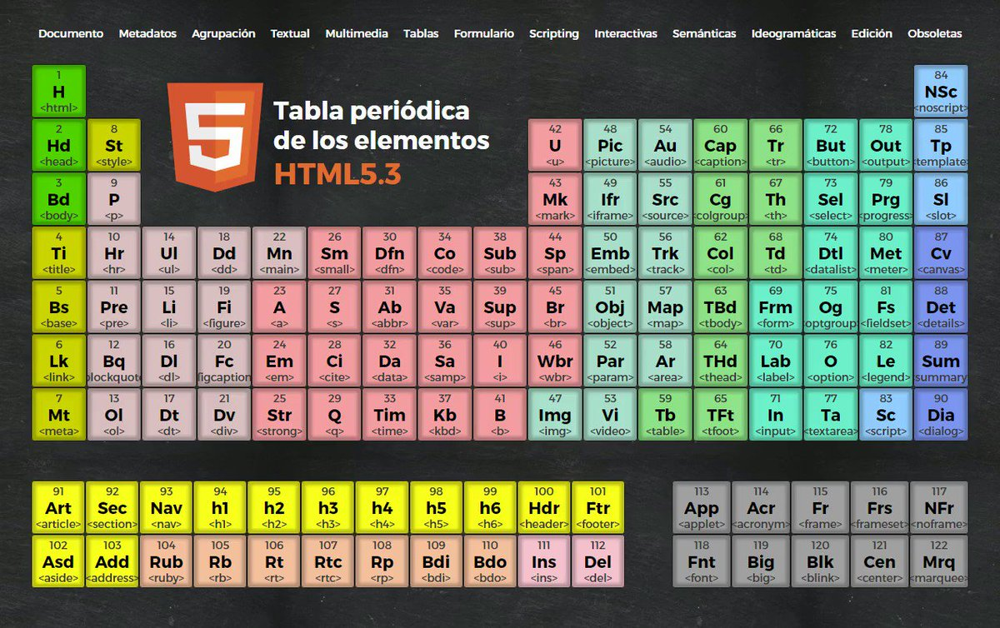
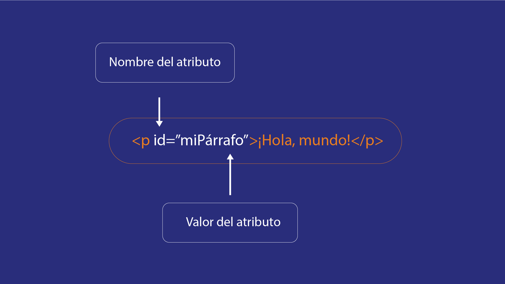
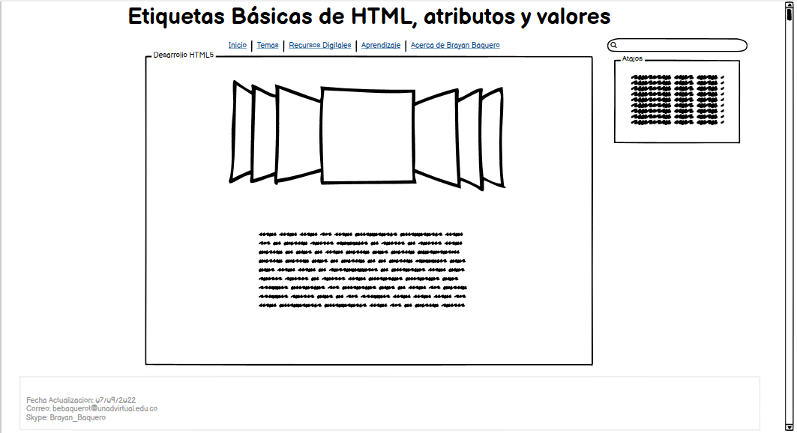

Definicion Etiquetas Básicas de HTML, atributos y valores
Etiquetas Básicas de HTML
HTML define un total de 91 etiquetas, de las cuales 10 se consideran obsoletas. Sin embargo, una etiqueta por sí sola a veces no contiene la suficiente información para estar completamente definida. Para ello contamos con los atributos: pares nombre-valor separados por "=" y escritos en la etiqueta inicial de un elemento después del nombre del elemento.
Etiquetas:

Atributos de HTML
Atributos básicos: Los atributos básicos se utilizan en la mayoría de etiquetas HTML y XHTML, aunque adquieren mayor sentido cuando se utilizan hojas de estilo en cascada (CSS)
Atributos de internacionalización: Estos atributos se utilizan en aquellas páginas que muestran sus contenidos en varios idiomas y las que quieran indicar de forma explícita el idioma de sus contenidos
Atributos de eventos: Estos atributos se utilizan en las páginas web que incluyen código JavaScript para realizar acciones dinámicas sobre los elementos de la página.
Atributos de foco: Se le denomina foco o focus, cuando un control o elemento del documento ha sido seleccionado. Cuando ese elemento deja de estar seleccionado, "pierde el foco" y es el nuevo elemento seleccionado el que se dice que tiene "el foco".
Valores de un atributo HTML
Cuando se hace uso de un atributo HTML se debe especificar su valor, este puede representar una cantidad exacta, característica especifica o simplemente en que medida se ejecutará dicho atributo. El valor se expresa entre comillas después del signo de (=), de acuerdo al atributo, pueden haber una variedad de valores disponibles. Por ejemplo, en caso dealign puede tomar el valor de center (centro), right (derecha), left (izquierda), justify (justificado).

Referencia: Garro, A. (s. f.). Etiquetas, atributos y elementos | XHTML. Recuperado 7 de septiembre de 2022, de https://www.arkaitzgarro.com/xhtml/capitulo-3.html
Mockup:
